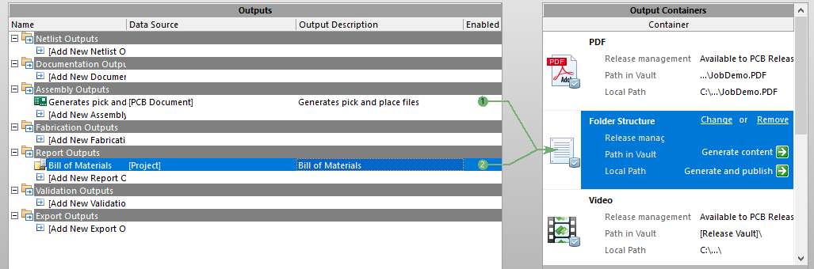

Intro
The pick and place program needs 2 files in order to work: one pick and place file (PNP file) and one bill of material (BOM file). In this tutorial/manual an Altium designer project will be used to demonstrate the principles.
Manufacturer part number
The first step when exporting files is assigning manufacturer part numbers to the components. In Altium designer this is done by adding a parameter to the schematic component. It is important that all schematic components have the same parameter name (case sensitive), in this "Manufacturer Part Number" is used as parameter name. You can also use something else e.g. "mpn", "part number", "flupke",...

Origin
The location of the origin is very important for the machine. The origin should be located in the left bottom corner of your PCB.

Exporting the files
TO DO: check circuit maker -> output job
Now you can finally start exporting the files. The easiest way to do this is with a output job. First you need
to add a output job file to your project.
- Using the File » New » Output Job File command
- Right-clicking on the project name in the Projects panel and choosing Add New to Project » Output Job File from the pop-up menu that appears.
Now you need to add both the PNP file and BOM file. First you are going to add the PNP file:
Assembly Outputs >> Add new Assembly Output >> Generates pick and place files >> [PCB DOCUMENT]
If you have multiple PCBs you can also specify which one to export.
TO DO: Check if this is true
Now Altium will create a pick and place file that the program can understand. If something goes wrong and you want to check if the problem is within the PNP file (or you want us to inspect it to find bugs in the program) then you might want to change the settings of the file. You can change the settings by double clicking on the newly added file. The following settings are recommended:
- Formats: CSV (don't forget disabling Text or you get the pick and place file twice).
- Units: Metric.
Now you need to add the BOM file:
Report Outputs >> Bill of Materials >> [Project]
It is important that you select [Project], otherwise you won't have all components in the file (you selected
a
schematic file) or you can't add the manufacturer part numbers to the components (you selected a PcbDoc).
Now the BOM file needs to be configured. Unlike the PNP file this is mandatory. Double click on the BOM file. You need to do change 2 things:
- Designator: On the left side make sure that the designator parameter is enabled. If you disable this parameter the program will not be able to link the locations from the PNP file to the manufacturer part numbers of the BOM file.
- Manufacturer part number: on the left side scroll down and make sure that manufacturer part number is enabled (or whatever you named the parameter before).
- File format: under Export options change the file format to CSV (Comma Delimited)(*.csv).
Now all you have to do is exporting the files: first select Folder structure under Output Containers and then enable the two files (2 green arrows should appear see image below). Now you just have to click on the Generate content button and you are finished. The two files are located under your project folder >> "Project Outputs for..." >> "BOM" / "Pick Place".
